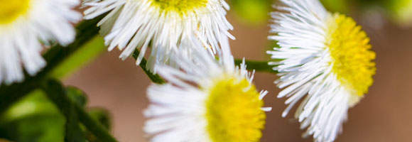

BIENVINIDO A FLORES SILVESTRES
Una flor silvestre es una flor que crece en estado salvaje, lo que significa que no fue sembrada o plantada intencionalmente. Sin embargo, las praderas de flores silvestres de algunas especies mixtas se venden en paquetes de semillas.. Las fotos que se mostraràn a continuación, fueron obtenidas de Google Imágenes.
 El término implica que la planta probablemente no es híbrida ni un seleccionado cultivar Que es en cualquier forma diferente de la forma en que aparece en la naturaleza como una planta nativa, incluso si está creciendo donde no sería natural. El término puede referir a la planta en floración globalmente, cuando no en floración, y no solo a la flor..